Scuba Diving Calculation Assistant
User Guide
Table of Contents
How to use the Scuba Diving Calculation Assistant
Standard Maximum Operating Depth (SMOD).
Partial Pressure of Oxygen (PPO2)
List of Figures
Figure 1: First snapshot of Simple calculations
Figure 2: How to get input through sliders
Figure 3: EAD result
Figure 4: MOD result
Figure 5: SMOD result
Figure 6: Best Mix result
Figure 7: PPO2 result
Figure 8: Warning for Incorrect Best mix
Figure 9: Warning for incorrect PPO2
Figure 10: Complex calculation
Figure 11: Getting inputs for EAD table
Figure 12: Final EAD table
Figure 13: PPO2 table
Introduction
Scuba Diving Calculation Assistant is an GUI application for common dive calculations, which could be useful for Scuba diver to dive safely. The aim to develop SDCA is to automate simple and complex calculations used by the dive industry commonly. The application is divided into two categories: Simple calculations and complex calculations.
Through Simple Calculations, User can provide input values and SDCA will display the following calculations:
EAD (Equivalent Air Depth) – To avoid the risk of nitrogen narcosis, it is very useful to know EAD which is calculated based upon the gas mixtures containing more than the normal 21% of o2.
MOD (Maximum Operating Depth) – This helps the diver to know the maximum safe depth at which it to dive in.
BM (Best Mix) – Best mix of gas is useful to know, using known depth to dive safely.
PPO2 (Partial pressure of oxygen) – partial pressure of oxygen is calculated by limiting the mixture to a safe level which is 1.1 ata-1.6 ata.
SMOD (Standard maximum operating depth) – This can be calculated by using standard PPO2 value 1.4.
Furthermore, through complex calculations, two tables will be produced by SDCA
EAD (Equivalent air depth) table: This will show EAD's for a start and end percentage of O2 along with start and end depth.
Table of partial pressures: This table will use same requirements as of EAD table with exception that when partial pressure is above 1.6, it should not be displayed.
Besides, Simple calculations and complex calculations, there is Help menu that should give instructions for how to use the program with acceptable values along with the meaning of the help menu items.
How to use the Scuba Diving Calculation Assistant
The Scuba Diving Calculation Assistant is here to support you with your diving calculations. When you open the application, it should look like this:

Figure 1: First snapshot of Simple calculations
To pick which calculation you would like to make, click the ‘Simple Calculations’ or ‘Complex Calculations’ tab (only Simple calculations have been implemented yet as a part of Sprint1).
Simple Calculations
The SDCA can calculate five common simple diving calculations. Equivalent Air Depth (EAD), Maximum Operating Depth (MOD), Standard Maximum Operating Depth (SMOD), Fraction of Oxygen (Best Mix), and Partial Pressure of oxygen (PPO2)
Equivalent Air Depth (EAD)
To calculate the Equivalent Air Depth, enter the percentage of oxygen and depth by using the sliders
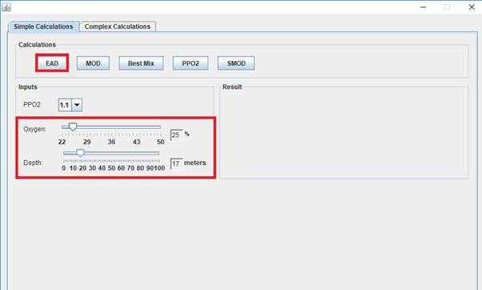
Figure 2: Getting input for EAD through sliders
When user provide input values through sliders, press [EAD] tab to know EAD value
The EAD is displayed to the right of the window in the ‘Result’ box.
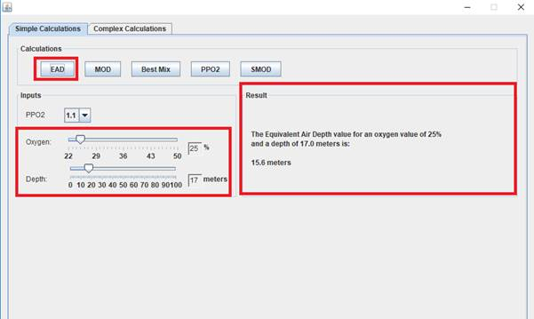
Figure 3: EAD result
Maximum Operating Depth (MOD)
To calculate the Maximum Operating Depth, click the ‘MOD’ button to the left of the window.
Enter the Partial Pressure of oxygen and the percentage of oxygen in the mix
The MOD is displayed to the right of the window in the ‘Result’ box in metres.
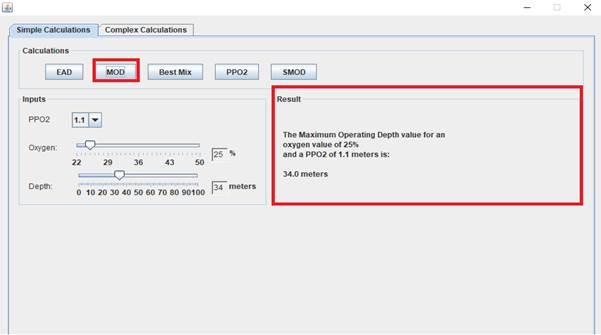
Figure 4: MOD result
Standard Maximum Operating Depth (SMOD)
To calculate the Standard Maximum Operating Depth, click the ‘SMOD’ button to the left of the window. In SMOD the PPO2 is fixed to 1.4. Enter the percentage of oxygen, then click on “SMOD”
The SMOD is displayed to the right of the window in the ‘Result’ box.
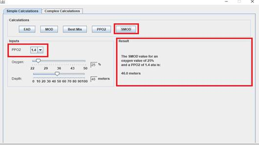
Figure 5: SMOD result
Fraction of Oxygen (Best Mix)
To calculate the Best Mix, click the ‘Best Mix’ button to the left of the window.
Enter the partial pressure of oxygen and the depth, then click “Best Mix”. The Best Mix is displayed to the right of the window in the ‘Result’ box.
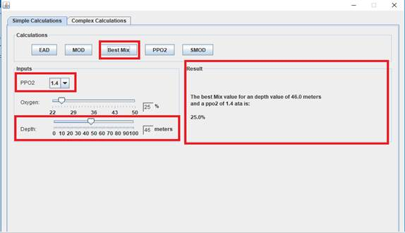
Figure 6: Best Mix result
Partial Pressure of Oxygen (PPO2)
To calculate the Partial Pressure of Oxygen, click the ‘PPO2’ button to the left of the window.
Enter the input values from the sliders to calculate PPO2, the PPO2 is displayed to the right of the window in the ‘Result’ box.
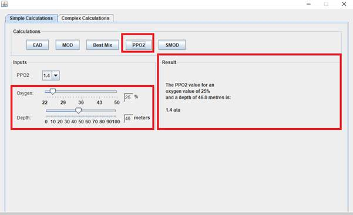
Figure 7: PPO2 result
Error Handling
The Scuba Diving Calculation Assistant application has been designed in such a way that if user provide invalid values which are not in the acceptable range, program will display errors/warnings through GUI to inform users about the mistakes and give them a chance to correct the values so that application produce correct calculations.
There could be many instances where results could be invalid but following are examples of some screenshots when values entered by user are not valid:
1. For Best mix, Oxygen value must be between 22% and 50%, when this value is out of range, warning will be displayed to user as shown below:
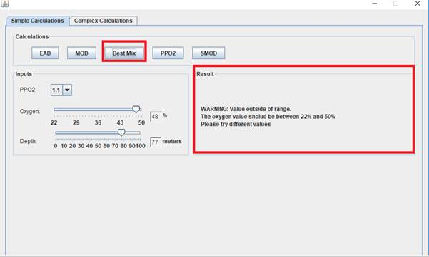
Figure 8: Warning for Incorrect Best mix
2. When PPO2 exceeds recommended range of 1.1-1.6, warning will be displayed as following:
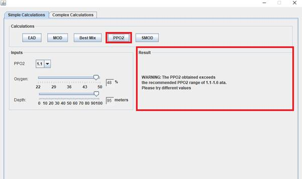
Figure 9: Warning for incorrect PPO2
Complex calculations
Complex calculations component in SDCA is used for producing two tables: EAD table and table of partial pressures.
To calculate complex calculations, click on the complex calculations tab at the top left-hand side.
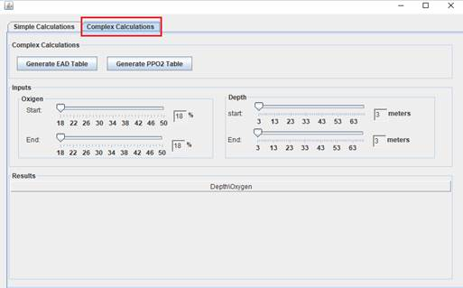
Figure 10: Complex calculation
EAD table
For this, user needs to input values for oxygen and depth where, oxygen values must be between 18%-50% or any combination between these values whereas depth values should only range between 3m to 70m. Any value out of these range is not acceptable by the system.
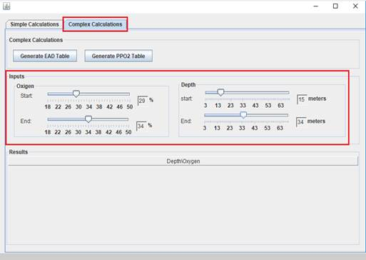
Figure 11: Getting inputs for EAD table
After providing inputs for EAD table, click on generate EAD table tab. Table of EAD’s will be generated with increment of 1 in oxygen values and increment of 3 in depth values. This is shown in the following snapshot:
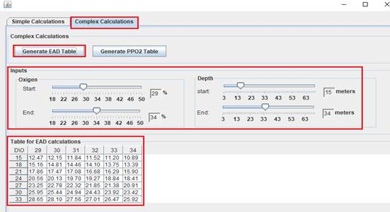
Figure 12: Final EAD table
PPO2 table
For PPO2 table, input requirements are same as of EAD table mentioned above, but the partial pressure above 1.6 will not be displayed. User will give input to the system, click on generate PPO2 table tab, PPO2 table will be generated as shown in the snapshot below:
Blank boxes in the table represent value of PPO2 is more than 1.6
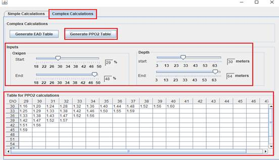
Figure 13: PPO2 table